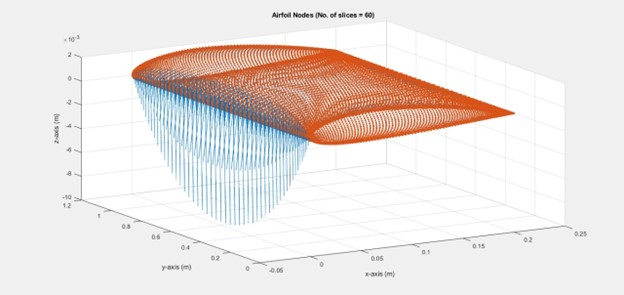

Computational Fluid Dynamics on MATLAB
Skills :
Description :
In my MATLAB project, I created a simulation program to study how a flexible wing behaves under aerodynamic forces. The project focused on understanding the interaction between air pressure on the wing and its structural response. To start, I prepared input data that included the shape of the airfoil, which I obtained from external sources. I divided the wing into a grid of points, making sure to place more points near the tips where the airflow is most active.
The main part of the project involved calculating the aerodynamic forces acting on each section of the wing and then using those forces to analyze how the wing would deform. I used specific functions in MATLAB to perform these calculations, which allowed me to see how the airflow affected the wing's shape and stability. This combination of aerodynamic and structural analysis helped provide a clearer picture of how wings behave in real-world conditions.
Finally, I visualized the results to understand the pressure distribution along the wing and how it changed under different conditions. This included plotting key data to show how the wing was affected by air pressure. Through this project, I gained valuable experience in using MATLAB for simulations, enhancing my understanding of fluid dynamics and structural behavior, and demonstrating the complex relationship between airflow and wing performance.
Get in Touch
Website designed and developed by me using template provided by HTML5 UP © 2024. All rights reserved.